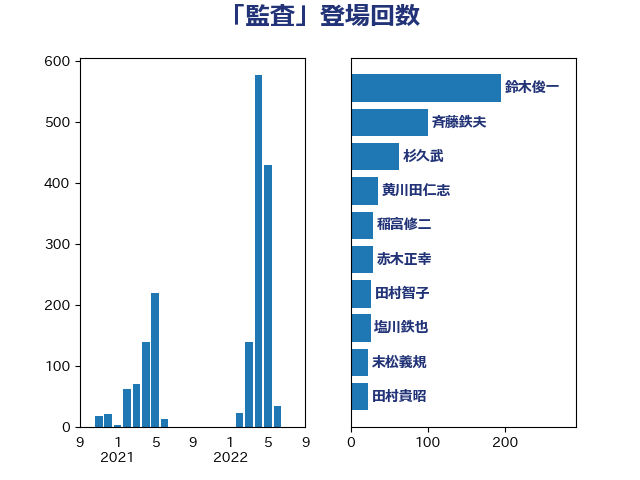

単語「監査」

| 鈴木俊一 | 自由民主党 | 195 回 |
| 斉藤鉄夫 | 公明党 | 101 回 |
| 杉久武 | 公明党 | 63 回 |
| 黄川田仁志 | 自由民主党 | 35 回 |
| 稲富修二 | 立憲民主党 | 29 回 |
| 赤木正幸 | 日本維新の会 | 29 回 |
| 田村智子 | 日本共産党 | 27 回 |
| 塩川鉄也 | 日本共産党 | 26 回 |
| 末松義規 | 立憲民主党 | 23 回 |
| 田村貴昭 | 日本共産党 | 23 回 |
| 浜田聡 | NHK党 | 22 回 |
| 角田秀穂 | 公明党 | 22 回 |
| 大串博志 | 立憲民主党 | 21 回 |
| 若林健太 | 自由民主党 | 19 回 |
| 本村伸子 | 日本共産党 | 18 回 |
| 武村展英 | 自由民主党 | 16 回 |
| 菅義偉 | 自由民主党 | 16 回 |
| 沢田良 | 日本維新の会 | 15 回 |
| 坂本哲志 | 自由民主党 | 14 回 |
| 岸田文雄 | 自由民主党 | 14 回 |
| 橋本岳 | 自由民主党 | 14 回 |
| 若松謙維 | 公明党 | 14 回 |
| 佐々木紀 | 自由民主党 | 13 回 |
| 平井卓也 | 自由民主党 | 13 回 |
| 梶山弘志 | 自由民主党 | 13 回 |
| 萩生田光一 | 自由民主党 | 13 回 |
| 小山展弘 | 立憲民主党 | 12 回 |
| 藤岡隆雄 | 立憲民主党 | 12 回 |
| 熊谷裕人 | 立憲民主党 | 11 回 |
| 赤澤亮正 | 自由民主党 | 11 回 |
| 渡辺周 | 立憲民主党 | 10 回 |
| 山田太郎 | 自由民主党 | 9 回 |
| 福島伸享 | 無所属 | 9 回 |
| 高橋千鶴子 | 日本共産党 | 9 回 |
| 宮路拓馬 | 自由民主党 | 8 回 |
| 武田良太 | 自由民主党 | 8 回 |
| 細田博之 | 自由民主党 | 8 回 |
| 小沢雅仁 | 立憲民主党 | 7 回 |
| 泉健太 | 立憲民主党 | 7 回 |
| 豊田俊郎 | 自由民主党 | 7 回 |
| 山東昭子 | 自由民主党 | 6 回 |
| 武部新 | 自由民主党 | 6 回 |
| 赤羽一嘉 | 公明党 | 6 回 |
| 城井崇 | 立憲民主党 | 5 回 |
| 石田昌宏 | 自由民主党 | 5 回 |
| 福岡資麿 | 自由民主党 | 5 回 |
| 薗浦健太郎 | 自由民主党 | 5 回 |
| 野田国義 | 立憲民主党 | 5 回 |
| 金子恭之 | 自由民主党 | 5 回 |
| 中山展宏 | 自由民主党 | 4 回 |
| 伊藤孝江 | 公明党 | 4 回 |
| 佐藤英道 | 公明党 | 4 回 |
| 山口俊一 | 自由民主党 | 4 回 |
| 市村浩一郎 | 日本維新の会 | 4 回 |
| 杉尾秀哉 | 立憲民主党 | 4 回 |
| 牧島かれん | 自由民主党 | 4 回 |
| 上田清司 | 国民民主党 | 3 回 |
| 吉川元 | 立憲民主党 | 3 回 |
| 吉田統彦 | 立憲民主党 | 3 回 |
| 吉良よし子 | 日本共産党 | 3 回 |
| 塩田博昭 | 公明党 | 3 回 |
| 安達澄 | 無所属 | 3 回 |
| 松沢成文 | 日本維新の会 | 3 回 |
| 櫻井周 | 立憲民主党 | 3 回 |
| 浅田均 | 日本維新の会 | 3 回 |
| 田村憲久 | 自由民主党 | 3 回 |
| 福山哲郎 | 立憲民主党 | 3 回 |
| 菅家一郎 | 自由民主党 | 3 回 |
| 谷田川元 | 立憲民主党 | 3 回 |
| 足立康史 | 日本維新の会 | 3 回 |
| 三浦信祐 | 公明党 | 2 回 |
| 上川陽子 | 自由民主党 | 2 回 |
| 下野六太 | 公明党 | 2 回 |
| 伊藤渉 | 公明党 | 2 回 |
| 古賀之士 | 立憲民主党 | 2 回 |
| 吉川ゆうみ | 自由民主党 | 2 回 |
| 塩村あやか | 立憲民主党 | 2 回 |
| 室井邦彦 | 日本維新の会 | 2 回 |
| 宮本岳志 | 日本共産党 | 2 回 |
| 岩渕友 | 日本共産党 | 2 回 |
| 柳ヶ瀬裕文 | 日本維新の会 | 2 回 |
| 笠井亮 | 日本共産党 | 2 回 |
| 舩後靖彦 | れいわ新選組 | 2 回 |
| 芳賀道也 | 国民民主党 | 2 回 |
| 道下大樹 | 立憲民主党 | 2 回 |
| 酒井庸行 | 自由民主党 | 2 回 |
| 麻生太郎 | 自由民主党 | 2 回 |
| 中西祐介 | 自由民主党 | 1 回 |
| 今村雅弘 | 自由民主党 | 1 回 |
| 佐々木さやか | 公明党 | 1 回 |
| 吉川沙織 | 立憲民主党 | 1 回 |
| 太田房江 | 自由民主党 | 1 回 |
| 宮本徹 | 日本共産党 | 1 回 |
| 寺田静 | 無所属 | 1 回 |
| 山本剛正 | 日本維新の会 | 1 回 |
| 山本博司 | 公明党 | 1 回 |
| 島村大 | 自由民主党 | 1 回 |
| 後藤祐一 | 立憲民主党 | 1 回 |
| 後藤茂之 | 自由民主党 | 1 回 |
| 斎藤嘉隆 | 立憲民主党 | 1 回 |
| 木村次郎 | 自由民主党 | 1 回 |
| 柴田巧 | 日本維新の会 | 1 回 |
| 浅野哲 | 国民民主党 | 1 回 |
| 浮島智子 | 公明党 | 1 回 |
| 牧山ひろえ | 立憲民主党 | 1 回 |
| 盛山正仁 | 自由民主党 | 1 回 |
| 石川香織 | 立憲民主党 | 1 回 |
| 笠浩史 | 無所属 | 1 回 |
| 菊田真紀子 | 立憲民主党 | 1 回 |
| 西岡秀子 | 国民民主党 | 1 回 |
| 赤嶺政賢 | 日本共産党 | 1 回 |
| 辻元清美 | 立憲民主党 | 1 回 |
| 野上浩太郎 | 自由民主党 | 1 回 |
| 野田聖子 | 自由民主党 | 1 回 |
| 音喜多駿 | 日本維新の会 | 1 回 |